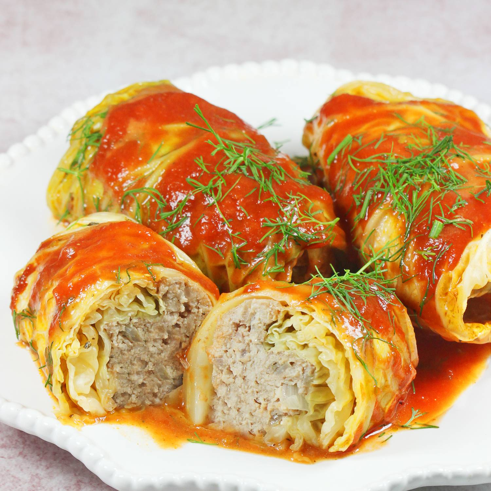

Golabki

Description
Golabki are cabbage leaves stuffed with ground beef and rice, then
simmered in tomato soup. This works great in the oven or a slow cooker.
Serve them with the pan juices and a drizzle of sour cream, or mix the pan
juices with sour cream and ladle it over the cabbage rolls. They're also
good with mashed potatoes and a cucumber and sour cream salad. They freeze
well too — either before or after cooking.
Ingredients
- 1 head cabbage, cored
- 2 tablespoons butter
- 1 large onion, chopped
- 1 pound ground beef
- ½ pound ground pork
- 1 ½ cups cooked rice
- 1 teaspoon finely chopped garlic
- 1 teaspoon salt, plus more to taste
- ¼ teaspoon ground black pepper, plus more to taste
- 3 (10.5 ounce) cans condensed tomato soup
- 2 (12 fluid ounce) cans tomato juice, or more to taste
- ½ cup ketchup
Steps
-
Bring a large pot of lightly salted water to a boil. Place cabbage head
into the pot, cover, and cook until leaves are softened enough to remove
from the head, about 3 minutes. Remove cabbage from the pot and let sit
until leaves are cool enough to handle, about 10 minutes.
-
Remove 18 whole leaves from the cabbage head, cutting out any thick
tough center ribs. Set whole leaves aside. Chop the remaining cabbage
and spread it in the bottom of a casserole dish.
-
Melt butter in a large skillet over medium-high heat. Add onion and
sauté until tender, 5 to 10 minutes. Remove from the heat and let cool,
about 5 minutes.
-
Combine beef, pork, cooked rice, garlic, salt, and pepper in a large
bowl. Add onion and mix until well combined.
- Preheat the oven to 350 degrees F (175 degrees C).
-
Place about 1/2 cup beef mixture onto a cabbage leaf. Roll the leaf
around beef mixture, tucking in the sides to create an envelope around
the meat. Repeat to make remaining cabbage rolls. Place cabbage rolls in
a layer over chopped cabbage in the casserole dish. Season with salt and
pepper.
-
Whisk condensed soup, tomato juice, and ketchup together in a bowl; pour
over cabbage rolls and cover the dish tightly with aluminum foil.
-
Bake in the preheated oven until cabbage is tender and meat is cooked
through, about 1 hour. Uncover for the last 20 to 30 minutes of cooking.
An instant-read thermometer inserted into the center should read at
least 160 degrees F (70 degrees C).